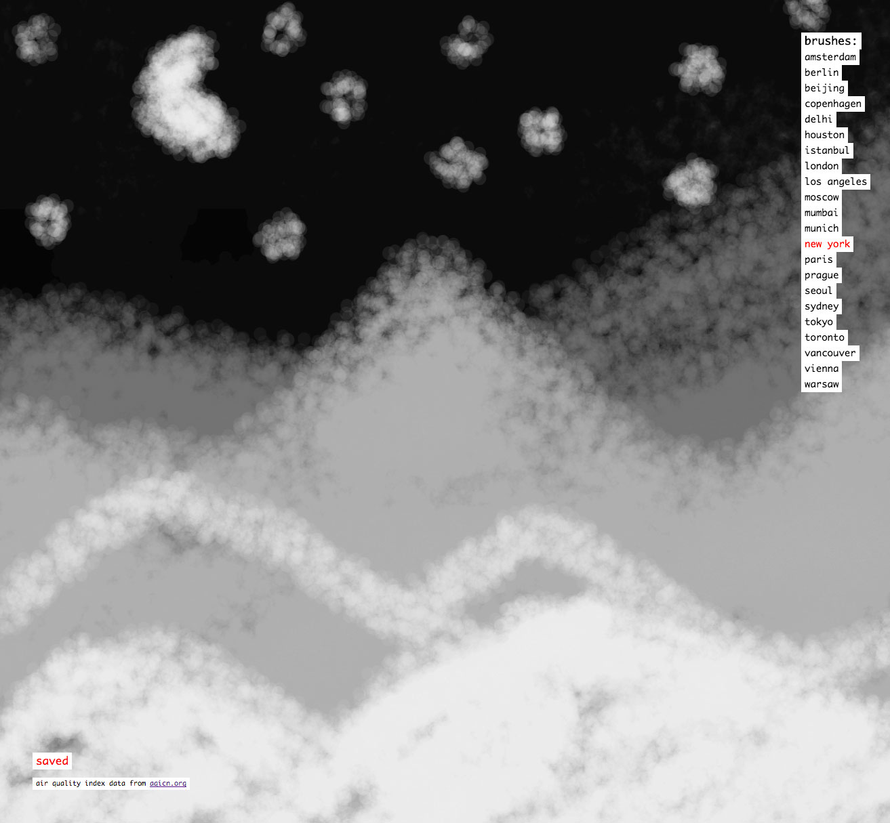

Air Quality
A drawing tool that uses real AQI (Air Quality Index) data from a chosen list of cities to control the brush; the more polluted the air, the darker and broader the brush. There is no way to clear the drawing (other than using the least polluted city's brush as an eraser of sorts)—an obvious enough metaphor.
Uses the aqicn.org API.
